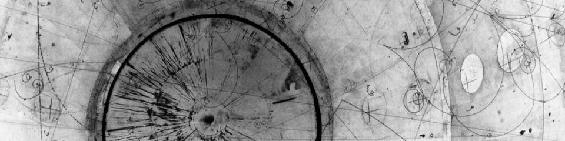

Yang Institute for Theoretical Physics, Stony Brook University

These are some informal notes (or in some cases, presentations) prepared either for graduate courses, or for my own benefit in studying certain topics. If you have any comments or questions, contact me!
Notes on Boundary CFTs (Final Project for Adv. QFT at Illinois)
Superconductors & Quantum Phase Transitions (PHY598: Graduate Seminar I Presentation)
Large Extra Dimensions (PHY599: Graduate Seminar II Presentation)
Fractional Quantum Hall Effect (PHY556: Solid State II Final Presentation)
Special thanks to Flip Tanedo (an academic uncle of mine) who maintains a really beautiful web page of his own with a wealth of great resources on Physics and TeX -- his style files and templates have been a great help in constructing a lot of the notes and presentations above. You can find most of his material on his old site at UC Irvine (physics.uci.edu/~tanedo/) though he's recently moved to a faculty position at UC Riverside.
Department of Physics
Stony Brook University
Stony Brook, NY 11794
samuel.homiller@stonybrook.edu
Stony Brook Dept. of Physics
Yang Institute for Theoretical Physics
The Simons Center for Geometry & Physics